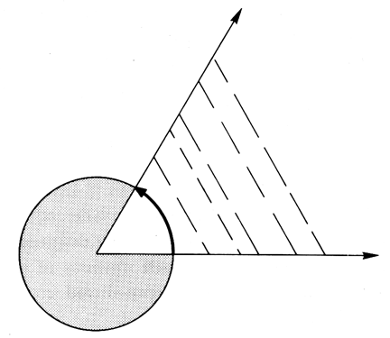

Fig. 986.816 Angles Are Angles Independent of the Length of their Edges. Lines are "size" phenomena and unlimited in length. Angle is only a fraction of one cycle.
Copyright © 1997 Estate of R. Buckminster Fuller